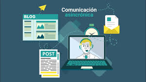
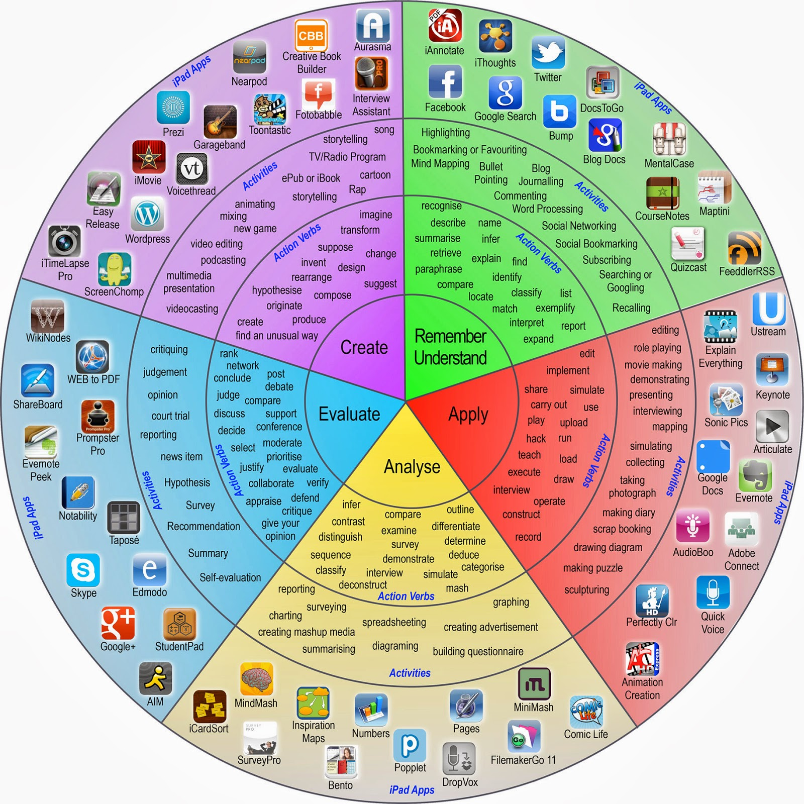

ANTECEDENTES
Antes de la etapa de Desarrollo, como parte del diseño, se deberán definir estrategias y técnicas si se desea crear contenido interactivo para un trabajo autodirigido (con gráficos, animaciones, pruebas, elementos de comunicación, etc.).
El diseño en e-learning incluye una combinación de Estrategias de Formación o metodologías pedagógicas. Cada estrategia puede presentarse en distintas técnicas, empleando diversos tipos de medios y herramientas comunicacionales.
Estrategia Tradicional / Expositivo
A través de estas estrategias se obliga a los alumnos a escuchar, leer y observar sobre un tema determinado (presentaciones, ejemplos desarrollados y demostraciones). Estas ponen énfasis en la adquisición de información pero pueden combinarse con estrategias de aprendizaje activo. Se emplean normalmente para proporcionar orientación y conceptos básicos antes de la etapa más práctica o compleja:
- Lecturas guiadas -en formato texto o hipertexto-.
- Lección magistral (Presentaciones).
- Comentario de texto-imagen (demostraciones de cómo se puede realizar una tarea).
- Actividad de discusión.
- Ejercicio o problema cerrado.
Estrategia de Aprendizaje Activo
Ponen énfasis en procesos activos para realizar actividades de procedimiento o basadas en principios para adquirir nuevos conocimientos. Se caracterizan por estar basados en aprendizaje situado y experimental, aprendizaje auto-dirigido y concepción constructiva y activa del aprendizaje.
- Basado en Casos: Ejercicio basado en Caso contextualizado
- Basado en Problemas: Problema Abierto, Juego didáctico, Webquest.
- Escenario Basado en Objetivos: Escenario Real o Virtual de Aprendizaje.
- Por Actuación Simulada Situada: Simulación, Experimento.
- Basado en Proyectos: Trabajos de Proyecto real.
- Colaborativo: Aplicable a diferentes actividades. Motivan a los alumnos a compartir conocimientos.
- Investigación-Acción: Investigación guiada, aplicable a diferentes actividades.
Adicional a la Estrategia Pedagógica debe tener en cuenta la Estrategia de Entrega y la Estrategia de Evaluación.
- Para seleccionar el formato de presentación es relevante considerar la comodidad de los estudiantes con los canales de presentación, su disponibilidad de tiempo (horario de trabajo o compartir equipo a ciertas horas), el acceso de los estudiantes a sistemas de redes, el tipo de software o requerimientos técnicos que se requieren, entre otros factores.
- Se debe determinar el propósito de la evaluación: Examinar posteriormente (evaluación sumativa), o medir efectividad del aprendizaje de manera inmediata (evaluación formativa).
Las actividades de e-learning pueden ser sincrónicas o asincrónicas
Sincrónica

Asincrónica

De acuerdo a la taxonomía del dominio cognitivo de Bloom, las actividades de aprendizaje supondrían diferentes tipos de desempeño cognitivo, desde el nivel más bajo de desempeño (Recordar o memorizar información) al más alto (Crear algo nuevo o idear un nuevo enfoque). En la siguiente imagen puede observar posibles verbos y tipo de actividad a considerar según el dominio cognitivo.

Es importante denotar que estos son solamente ejemplos, existen otros verbos, así como recursos digitales que se pueden utilizar para el desarrollo de actividades.